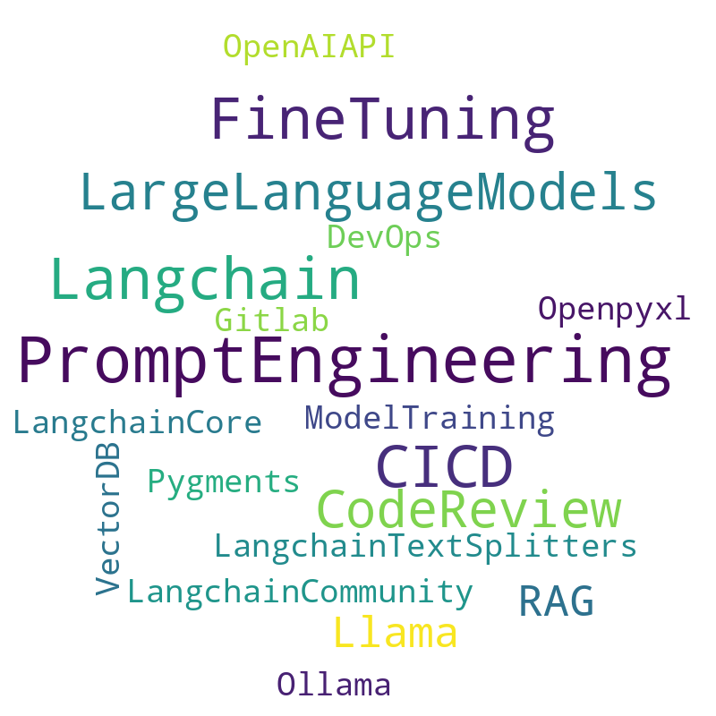

Building an AI Application from Scratch¶
Knowledge Tree¶
Iceberg Model¶

1. AI Code Review Robot¶
2. Identifying the Goal and Analyzing Requirements¶
-
Goal Definition
-
User Groups
-
Requirements
3. Data Collection and Preparation¶
-
Data Sources
-
Preprocessing Steps
4. Selecting Technology¶

Model Development¶
- Choose a Pre-trained Model
- Fine-tune the Model
5. System Integration and Deployment¶
System Architecture¶
- Frontend
- Backend
- Database
Integration¶
Deployment¶
6. Monitoring and Continuous Optimization¶
Monitoring¶
- Real-time logging to identify failures and bottlenecks.
- Metrics:
- Response time.
- Accuracy of suggestions.
Continuous Improvement¶
- Regular updates to the model with new data.
- Expand support for more programming languages.
- Collect user feedback for better recommendations.
7. Key Takeaways¶
- Split code into smaller chunks.
- Add line numbers to code snippets.
- Twice review
- First for review code
- Second for review comments validation
- Use reviewdog helps to summit the comments to the PR.
8. Cost¶
9. Closing Thoughts¶
What will AI change in the future?